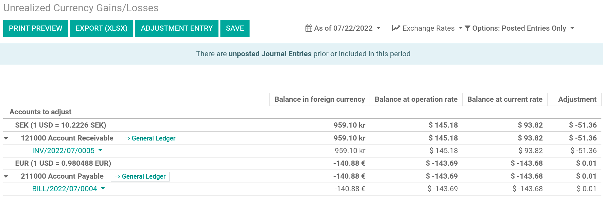
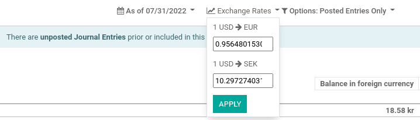
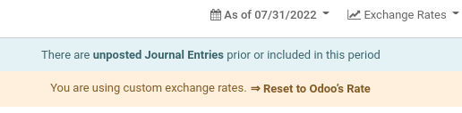

Gestione una cuenta bancaria en una moneda extranjera¶
En Odoo, cada transacción se registra en la divisa predeterminada de la empresa y los reportes están basados en ella. Odoo almacena dos valores para cada transacción cuando tiene una cuenta bancaria en una divisa extranjera:
El débito/crédito en la divisa de la empresa;
El débito/crédito en la divisa de la cuenta bancaria
Las tasas de cambio se actualizan en automático con los servicios web de una institución bancaria. Odoo usa los servicios web del Banco Central Europeo de forma predeterminada, pero hay otras opciones disponibles.
Configuración¶
Activar multidivisas¶
Para trabajar con múltiples monedas, vaya a y marque Multidivisas. Luego, en Registrar diferencias de cambio en:, indique un Diario, una Cuenta de Ganancias, una Cuenta de Pérdidas, y luego haga clic en Guardar.
Configurar divisas¶
Todas las divisas se crean de forma predeterminada luego de que configuró Odoo para admitir varias de ellas, pero esto no significa que están activas. Para activarlas, haga clic en Activar otras divisas en los ajustes de Multidivisas o vaya a .
Cuando las divisas están activadas, puede elegir automatizar la actualización de las tasas de cambio o dejarla en modo manual. Para configurar la actualización de tasas, regrese a , seleccione la opción Tasas de cambio automáticas, establezca el Intervalo según la frecuencia deseada y luego haga clic en Guardar. También tiene la opción de elegir el Servicio del cual desea obtener las tasas de cambio.
Haga clic en el botón Actualizar ahora (🗘) junto al campo Próxima ejecución para actualizar las tasas de cambio manualmente.
Crear una nueva cuenta bancaria¶
En la aplicación Contabilidad, vaya a y cree uno nuevo. Ingrese un Nombre del diario y establezca el Tipo como Banco. En la pestaña Asientos contables, ingrese un código corto, una divisa y, por último, haga clic en el campo Cuenta bancaria para crear una cuenta nueva. En la ventana emergente de creación de cuenta, ingrese un nombre, un código (por ejemplo: 550007), establezca su tipo como Banco y efectivo, elija un tipo de divisa y guarde los cambios. Cuando esté de nuevo en el diario, haga clic en el campo Número de cuenta y en la ventana emergente, complete el Número de cuenta, el Banco de su cuenta y guarde los cambios.

Trsa crear el diario, Odoo vincula de manera automática la cuenta bancaria a este. Puede encontrarlo en .
Factura de proveedor en divisa extranjera¶
Para pagar una factura en moneda extranjera, simplemente seleccione la moneda junto al campo Diario y registre el pago. Odoo crea y contabiliza de manera automática la ganancia o pérdida de cambio como un nuevo asiento de diario.

Nota
Tenga en cuenta que puede pagar una factura extranjera con otra moneda. En ese caso, Odoo realiza automáticamente la conversión entre las dos divisas.
Reporte de ganancias/pérdidas de divisas no realizadas¶
Este reporte brinda una visión general de todos los montos no efectuados en una moneda extranjera en su balance general y le permite ajustar una partida o establecer manualmente una tasa de cambio. Para acceder a este reporte, vaya a :menuselection:`Reportes–> Gestión: Ganancias/pérdidas de cambio no realizadas. Desde dicho apartado usted podrá tener acceso a toda las entradas de su balance general.
Si desea utilizar una tasa de cambio diferente a la establecida vaya a , haga clic en el botón Tasas de cambio y cambie la tasa de las divisas extranjeras en el informe.
Cuando cambie de forma manual las tasas de cambio, aparecerá un panel amarillo que le permitirá restablecer la tasa de cambio de Odoo. Para hacerlo, simplemente haga clic en Restablecer a la tasa de Odoo.
Para actualizar su balance general con el importe de la columna ajuste, haga clic en el botón Asiento de ajuste. En la ventana emergente, seleccione un Diario, una Cuenta de gastos y una Cuenta de ingresos para calcular y procesar las ganancias y pérdidas no realizadas.
Puede establecer la fecha del informe en el campo Fecha. Odoo revertirá automáticamente el asiento contable a la fecha establecida en Fecha de reversión.
Una vez contabilizado, la columna ajuste debería indicar 0.00, lo que significa que todas las ganancias/pérdidas no realizadas han sido ajustadas.